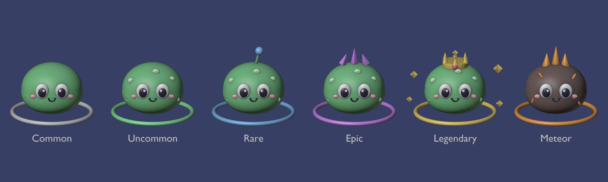
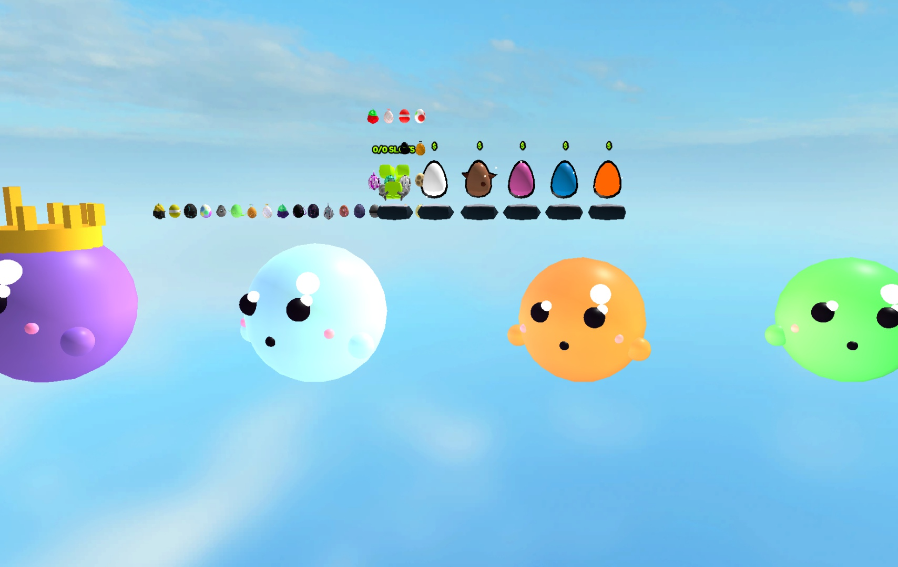
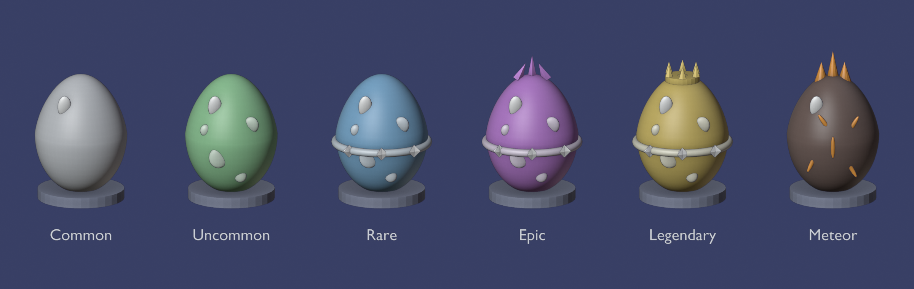
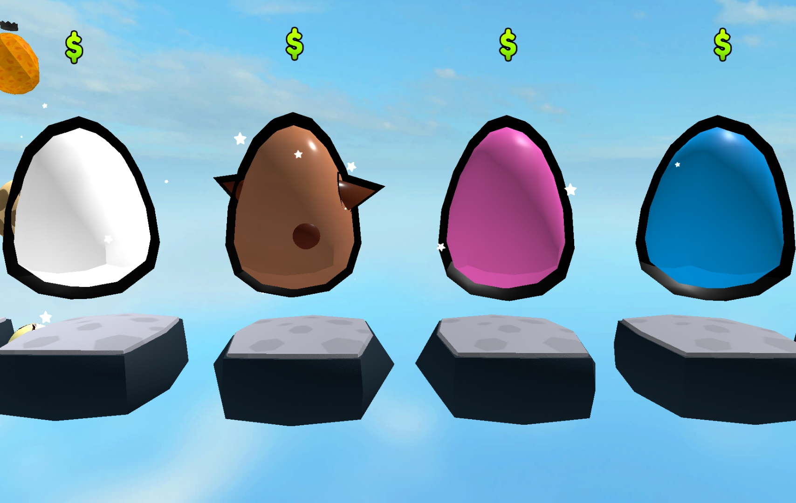

Для выбора: что берём в игру (пользователь, 2026-11-08: «нужно, чтобы было приятно глазу»). Наше — рендер из Blender (скрипты в assets/blender/), Toolbox — бесплатные модели, вставлены в Studio и сняты там (свет — дневной, режим редактирования). Копии чужих игр (Adopt Me, Grow a Garden, Pet Simulator, Steal an Egg) убраны.
Пришельцы

Наш: детёныш слизня. Ступень — кольцо её цвета и наряд: пятна, антенна, кристаллы, корона с искрами; метеоритный — тёмный, с трещинами и огнём. Так же получатся крабы, черви, скаты, рои и киты — 24 вида в одном стиле.

Toolbox, «Premium Slime Pack — 4 Cute Pets» (Oquyomi, 126032665700479): глянцевые слизни, у теневого корона. Приятные, но это только слизни — остальные 23 вида делать всё равно, и подгонять под этот стиль. Другие слизни из поиска — куб и камень — слабые.
Яйца

Наше: яйцо по редкостям — пятна, пояс со звёздами, кристаллы, корона; метеоритное — тёмное, с трещинами и огнём. Если берём — сделать ярче и глянцевее.

Toolbox, «Egg Pets KIT» (Rrg_125, 15850322685): классические мультяшные яйца с толстой чёрной обводкой и бликом, на каменных подставках. Перекрашиваются по редкости в коде; детали по редкости (корона и т. п.) пришлось бы добавить.
Что важно для выбора
У нас 24 вида пришельцев × 5 ступеней × 2 варианта, и пришельцы растут до 40 studs. Из Toolbox готового набора на всё нет — только отдельные слизни; остальное всё равно делать в Blender, и в одном стиле. Яйцо в игре одно (перекрашивается по редкости), его из Toolbox взять проще всего. Возможен и смешанный вариант: яйцо — из Toolbox, пришельцы — наши.